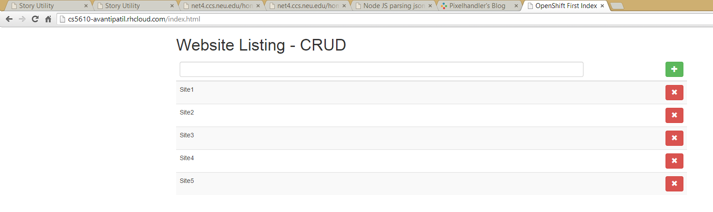

This link shows the output returned in json format
Click Here to see the Output

This Experiment is continuation of Experiment 29
In this experiment I have added a functionalitty to remove data from JSON document in the Open Shift.
Description :
Above code snippet will change / delete the a json document on the server.
where the websites will remove the row with given index and data is sent back using http get method to display on the page.
The above code snippet shows that we can use app.delete to delete the content from website.
the website.splice will remove the only 1 content starting with given index in the code.
For example : "Site3" is removed from key and pair